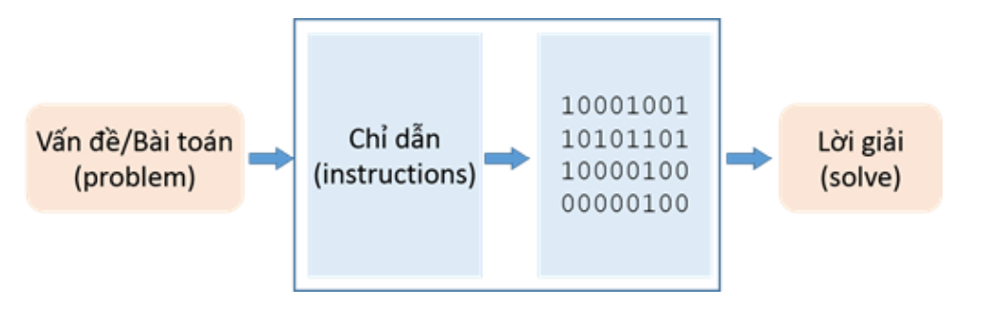

Giới thiệu về lập trình
-
Máy tính (computer) là máy lưu trữ dữ liệu (số, văn bản, hình
ảnh), tương tác với các thiết bị (màn hình, máy in, loa) và
thực thi chương trình
-
Chương trình máy tính (computer program) là một chuỗi các
chỉ dẫn/lệnh (instructions) để máy tính thực hiện nhằm hoàn
thành một nhiệm vụ nào đó.

-
Lập trình (computer programming) là thiết kế (designing) và
hiện thực (implementing) các chương trình máy tính bằng
ngôn ngữ lập trình (programming language)
Ngôn ngữ máy (machine language/machine code)
- 1300042774
- 1400593419
- 1200274027
Ngôn ngữ assembly (assembly language)
- load basepay
- add overpay
- store grosspay
Ngôn ngữ cấp cao (high-level language)
gross_pay = base_pay + overtime_pay
- COBOL (Common Common Business-Oriented Language), BASIC(Beginner's All-Purpose Symbolic), C...
- C++, C#, Java, Python, Ruby, Perl...
- Biến (variables): là vùng nhớ dùng để lưu trữ một giá trị dữliệu, mỗi biến có một tên.
- Cấu trúc điều khiển (control structures/logic structures): điều khiển trật tự thực hiện các câu lệnh của chương trình (flow control).
- Cấu trúc dữ liệu (data structures): cách tổ chức và lưu trữ dữ liệu trong máy tính để sử dụng dữ liệu có hiệu quả.
- Cú pháp (syntax): tập hợp các quy tắc của một ngôn ngữ lập trình mà người lập trình cần phải tuân thủ.
- Công cụ (tools): là môi trường giúp người lập trình phát triển chương trình (Integrated Development Environment - IDE).
- Chương trình nguồn (source program) hay mã nguồn (source code) được viết bằng một ngôn ngữ lập trình cấp cao và được lưu trong một file (văn bản không định dạng - plain text).
- Chương trình dịch sẽ chuyển chương trình nguồn sang mã máy (machine code) để máy tính thực thi.
- Biên dịch (compiler): chương trình dịch đọc toàn bộ mã nguồn của một chương trình và chuyển tất cả sang mã máy, sau đó máy tính sẽ thực hiện mã máy.
- Thông dịch (interpreter): chương trình dịch đọc mã nguồn và thực hiện từng dòng lệnh của mã nguồn đó.
Ngôn ngữ lập trình C++
- C++ là ngôn ngữ biên dịch. Chương trình nguồn được trình
biên dịch chuyển sang mã đối tượng (mã máy), sau đó liên
kết với các mã đối tượng khác (thư viện) để tạo thành
chương trình thực thi.
- C++ là ngôn ngữ phân biệt ký tự hoa và thường (case
sensitive).
someName khác với SomeName
// Chuong trinh dau tien: hello.cpp
#include <iostream>
using namespace std;
int main()
{
cout "Hello, world!\n";
return 0;
}
// Chuong trinh dau tien: hello.cpp
- Chú thích/ghi chú (comment) dùng để mô tả, giải thích, sưu
liệu.
-
Có hai cách tạo chú thích:
- trên một dòng: //
- trên nhiều dòng: /* */
- Ví dụ:
/* Chuong trinh dau tien
Ngay: 1/1/2014
Tac gia: Tram Anh */
#include <iostream>
- Chỉ thị tiền xử lý (preprocessor directive), bắt đầu bằng ký tự #.
- Sử dụng các đối tượng nhập/xuất như cin, cout... có trong iostream (header file).
using namespace std;
- Sử dụng tên các đối tượng có trong vùng tên chuẩn std như các tên cin, cout.
- Nếu không khai báo using namespace std; thì khi dùng cout phải ghi rõ: std::cout.
int main()
{
cout << "Hello, world!\n";
return 0;
}
- Chương trình C++ có thể có nhiều hàm (function) và chương trình bắt đầu thực hiện từ hàm main.
- Mỗi hàm gồm:
- Kiểu trả về.
- Tên hàm.
- Danh sách tham số đặt giữa hai dấu ngoặc đơn (). Thân hàm đặt giữa hai dấu ngoặc nhọn { }, liệt kê các câu lệnh/phát biểu mà hàm thực hiện.
- Chương trình hello.cpp chỉ có một hàm:
- Kiểu trả về là int
- Tên hàm là main
- Danh sách tham số trống.
- Thân hàm có hai câu lệnh.
cout << "Hello, world!\n";
- Câu lệnh in ra màn hình dòng chữ Hello, world!,'\n' là ký tự xuống hàng. cout được khai báo trong iostream, (namespace std).
- Chuỗi xuất ra màn hình được đặt giữa hai dấu nháy kép.
- Có thể dùng ký hiệu endl để xuống hàng:
cout << "Hello, world!" << endl;
return 0;
- Câu lệnh trả về (return statement) giá trị 0, báo cho hệ thống chương trình kết thúc thành công.
- Câu lệnh (statement) kết thúc bằng dấu chấm phẩy (;).
Bước 1: >Khởi động môi trường lập trình.
- Microsoft Visual Studio 2010
Bước 2: >Viết chương trình.
- Tạo project mới:
- File→New Project→Win32 Console Application
- Chọn thư mục lưu trữ và đặt tên project.
- Thêm vào project một file mới:
- Project→Add New Item→C++ File (.cpp)
- Đặt tên file.
- Gõ vào source code.
Bước 3: Biên dịch và thực thi chương trình.
- Biên dịch: Ctrl + F7
- Thực thi: Ctrl + F5
t
Lỗi
- Lỗi do compiler phát hiện: compile-time errors.
- Lỗi do linker phát hiện: link-time errors.
- Lỗi khi chương trình thực thi: run-time errors hoặc logic errors.
//no #include here
int main()
{
cout << "Hello, world!\n";
return 0;
}
error: 'cout' : undeclared identifier
#include <iostram>
using namespace std;
int main()
{
cout << "Hello, world!\n";
return 0;
}
error: Cannot open include file: 'iostram': No such file or directory
error: 'cout' : undeclared identifier
#include <iostream>
using namespace std;
int main()
{
cout << "Hello, world!\n;
return 0;
}
error: expected a ';'
#include <iostream>
using namespace std;
integer main()
{
cout << "Hello, world!\n";
return 0;
}
error: identifier "integer" is undefined
#include <iostream>
using namespace std;
int main()
{
cout < "Hello, world!\n";
return 0;
}
warning: '<' : operator has no effect; expected operator with side-effect
#include <iostream>
using namespace std;
int main()
{
cout << 'Hello, world!\n';
return 0;
}
error: too many characters in constant
#include <iostream>
using namespace std;
int main()
{
cout << "Hello, world!\n"
return 0;
}
error: missing ';' before 'return'